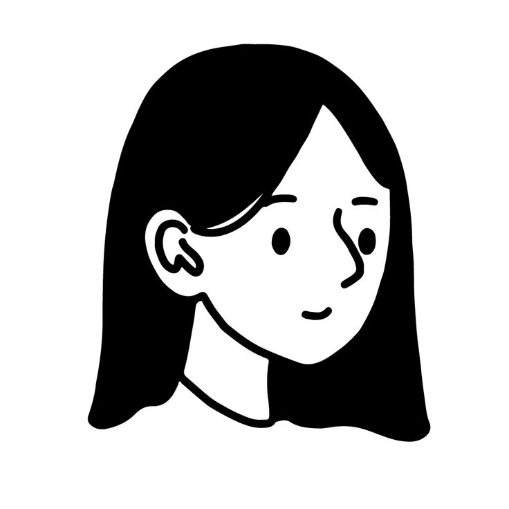

Sobre mim
Obrigada pela visita! Meu nome é Lina e este é o meu blog teste
"Coffee before Talkie"
Sou estudante na área de tecnologia da informação, e estou aprendendo a criar páginas utilizando linguagens HTML, CSS e JS e o programa VS Code.
Para criar este blog também pesquisei em sites como:
FreeCodeCamp ,
CodePen ,
W3 Schools e
Stackoverflow.